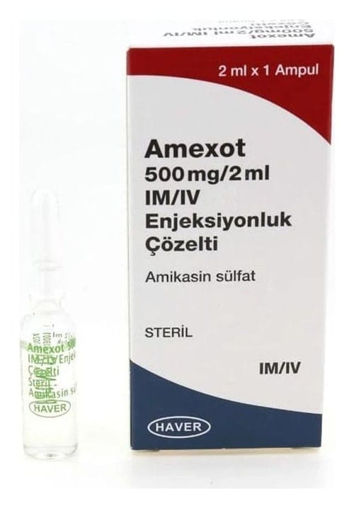

Amexot 500 mg/2 ml IM/IV Enjeksiyonluk Çözelti, 1 Adet

Ne için kullanılır
KT · Bölüm 1Bu ilacın ismi AMEXOT’dur. 2 mL’lik her bir ampul, etkin madde olarak 500 mg amikasin içerir. Amikasin, bir antibiyotiktir ve aminoglikozit olarak adlandırılan bir ilaç grubuna dahildir.
AMEXOT belirli bakterilerin neden olduğu ciddi enfeksiyonları tedavi etmede kullanılır.